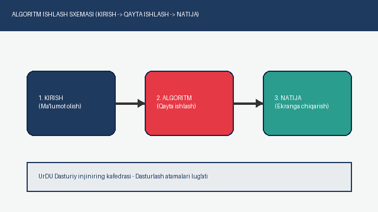
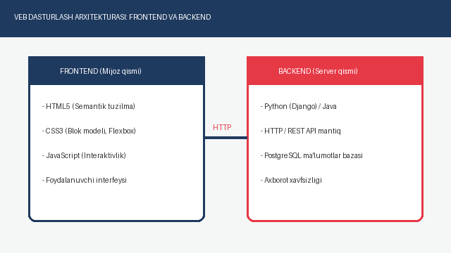

O'zgaruvchi (Variable)
Kompyuter xotirasida ma'lum bir qiymatni (son, matn yoki mantiqiy belgi) vaqtincha saqlash uchun nomlangan xotira katagi.
Misol: Python tilida talaba_yoshi = 20 ko'rinishida e'lon qilinadi.
Urganch davlat universiteti Dasturiy injiniring yo'nalishi talabalari uchun o'zbekcha IT qo'llanma
Dasturlash olamida ko'plab maxsus so'zlar va texnik iboralar mavjud. Ularni aniq tushunish har bir bo'lajak dasturchi uchun muvaffaqiyat poydevoridir.
Eng muhim tushunchalardan biri bu Algoritm bo'lib, u muammoni hal qilish uchun aniq buyruqlar ketma-ketligini bildiradi. H2O kabi kimyoviy formulalar yoki 210 = 1024 bayt kabi matematik darajalarni ifodalashda HTML ning maxsus teglari qo'llaniladi.
Kompyuter xotirasida ma'lum bir qiymatni (son, matn yoki mantiqiy belgi) vaqtincha saqlash uchun nomlangan xotira katagi.
Misol: Python tilida talaba_yoshi = 20 ko'rinishida e'lon qilinadi.
Muayyan vazifani bajaradigan, nomlangan va dasturning istalgan joyida qayta chaqirib ishlatish mumkin bo'lgan mustaqil kod bloki.
Afzalligi: Kod takrorlanishining (DRY prinsipi) oldini oladi.
Bir nechta qiymatlarni bitta tartiblangan ro'yxat ichida saqlaydigan ma'lumotlar tuzilmasi. Har bir element o'z indeksiga (0 dan boshlab) ega bo'ladi.
Qo'llanilishi: Talabalar ro'yxati yoki fan baholarini saqlashda.
Urganch davlat universiteti qoshidagi IT o'quv markazida dasturlash atamalarini amaliy loyihalar orqali o'rganish kurslari tashkil etilgan:
| Yo'nalish | Texnologiya va til | Lug'atdagi atamalar | O'qish muddati | Oylik to'lov (so'm) |
|---|---|---|---|---|
| Frontend dasturlash | HTML5, CSS3, Flexbox va Grid | 145 ta atama | 2 oy | 350 000 so'm |
| JavaScript (ES6+) va DOM | 210 ta atama | 3 oy | 450 000 so'm | |
| Backend dasturlash | Python va Django freymvorki | 260 ta atama | 4 oy | 500 000 so'm |
| Java Core va Spring Boot | 290 ta atama | 5 oy | 550 000 so'm | |
| Ma'lumotlar bazasi | PostgreSQL va SQL so'rovlar | 120 ta atama | 2 oy | 400 000 so'm |
| To'liq Full-Stack paketi (Talabalar uchun −20% chegirma bilan) | 1 025 ta atama | 10 oy | 380 000 so'm | |
Urganch davlat universitetining Dasturiy injiniring kafedrasi talabalari uchun quyidagi o'rganish ketma-ketligi tavsiya etiladi:


"Kodni shunday yozingki, uni o'qiyotgan odam sizning kimligingizni bilmasin, lekin qanday mantiq yozilganligini darhol tushunsin."
Yangi dasturlash atamasini qo'shish yoki o'quv kurslariga yozilish uchun onlayn arizani to'ldiring.
Ariza topshirish sahifasiga o'tishO'z ustingizda mustaqil ishlash uchun MDN Web Docs portalidan foydalaning. Kod yozishda ekranga < va > belgilarini chiqarishni to'g'ri ishlating. Qo'shimcha bo'sh joylar uchun belgisi xizmat qiladi.